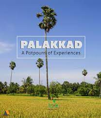
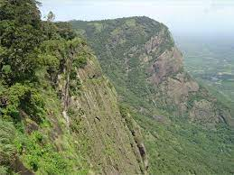
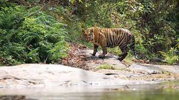

Palakkad is one of the fourteen districts of Kerala and has no coastal line. The district opens the state to the rest of the country through the Palakkad Gap with a width of 32 to 40 Kms. Its geographical position, historical background, educational status, tourism hot-spots and above all, the development activities that are carried out, are wide and varied. The district is one of the main granaries of Kerala and its economy is primarily agricultural. The district is also the land of Palmyrahs.
| Nelliyampathy Hills | |
|---|---|
|  | From the town of Nenmara in Palakkad district, the cloud-caressed peaks of the majestic Nelliyampathy Hill ranges are a sight to behold. The height of the hills ranges from 467 m to 1,572 m and it has an extremely calming effect on all who view it. To reach Nelliyampathy, one has to take the road starting from Nenmara that proceeds to the Pothundy Dam. There are about 10 hairpin bends that have to be negotiated on the way to Nelliyampathy. The Pothundy Dam is a beautiful locale with facilities for boating and is a nice option as a picnic place. As the Ghat road winds its way up to Nelliyampathy, at certain places there are viewpoints from where the vast stretches of Palakkad district are visible with its extensive paddy fields forming a verdant carpet. It also offers a splendid view of the Palakkad Gap, which is a geographical phenomenon in the Western Ghats formation in this region, bringing into view, parts of the adjoining State of Tamil Nadu. |
| Parambikulam Tiger Reserve | |
|---|---|
|  | Nestled in the Chittur taluk of Palakkad district, this area measuring 643.66 square kilometers is home to a wide range of species. Around 40 species of mammals, 47 species of fish and 250 species of birds call this their home. They dwell alongside 124 species of butterflies and 1000 or so separate species of insects. The Terrapin perches on a log of wood as the Bison and Spotted Deer make their way to open pasture land. The Bush Frogs and Mugger Crocodiles lurk in their own spots while the egrets and Cormorants loiter around noisily. Somewhere in the forest, the squirrels give out a screech of warning. This land belongs to the majestic Tigers. Welcome to the Parambikulam Tiger Reserve, where one can still find nature in its purest and most pristine form. The name of the reserve itself is derived from two words; 'parambu' (reeds) and 'kulam'(waterhole). Inside what is considered the world’s first scientifically managed teak plantation lies the great Kannimara tree. This tree is the oldest and largest of its kind and is believed to be over 350 years old. Four adults side by side would be needed to encompass its girth. The tribals worship it as a symbol of the Gods and its magnificence is amplified by the sheer magnitude of its size and reach. |